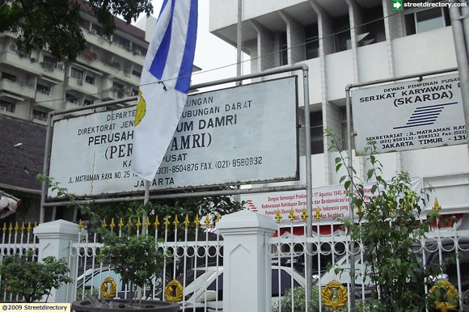

PERUM DAMRI
DAMRI adalah kepanjangan dari Djawatan Angkoetan Motor Repoeblik Indonesia (ER, EYD: Jawatan Angkutan Motor Republik Indonesia) yang dibentuk berdasarkan Maklumat Kementerian Perhubungan RI No.01/DAMRI/46 tanggal 25 November 1946 dengan tugas utama menyelenggarakan angkutan penumpang dan barang di atas jalan dengan menggunakan kendaraan bermotor.
Dalam perkembangan selanjutnya sebagai Perusahaan Umum (Perum), nama DAMRI tetap diabadikan sebagai brand mark dari Badan Usaha Milik Negara (BUMN) ini yang hingga saat ini masih tetap konsisten menjalankan tugasnya sebagai salah satu penyelenggara jasa angkutan penumpang dan barang dengan menggunakan bus dan truk.
Kendaraan Umum
- Busway TransJakarta
- Menggunakan Busway arah Matraman, turun di Halte Matraman 1 atau Halte Matraman 2 depan Hotel Balairung/ Hotel Grand Menteng, lokasi seminar berada disamping hotel-hotel tersebut.
- Angkot
- Dari Arah Senen, Kramat gunakan angkot 01A atau 01 turun depan DAMRI, dari Kampung Melayu naik 01A turun depan bank BCA lalu gunakan jembatan penyebrangan.
Parkir
Parkir bisa di DAMRI atau di kampus Sekolah Tinggi Perpajakan Indonesia.